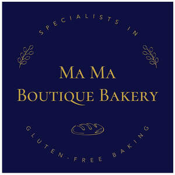

Trade Mark Journal No.2025/020 16 May 2025
UK00004167897 3 March 2025 (30,32,35,43)

- Class 30
- Bakery goods; Gluten-free bakery products; Chocolate fillings for bakery products; Pastries; Mixes for making bakery products; Macaroons [pastry]; Chocolate for confectionery and bread; Pastry; Preparations for making bakery products; Danish pastries; Viennese pastries; Dairy confectionery; Chocolate pastries; Ice-cream cakes; Flour confectionery; Frozen pastries; Confectionery; Pastries, cakes, tarts and biscuits (cookies); Almond pastries; Savory pastries; Frozen pastry; Breads; Confectionery chips for baking; Vegan cakes; Frozen dairy confections; Prepared desserts [pastries]; Confectionery bars; Chocolate confectionary; Croissants; Pâté [pastries]; Pastries with fruit; Fruit pastries; Gluten-free bread; Prepared desserts [confectionery]; Pastry dough; Cake doughs; Fondants [confectionery]; Pizza flour; Truffles [confectionery]; Gluten-free pizza; Chocolate confectionery; Danish bread; Custards [baked desserts]; Frozen confectionery; Cakes; Dough for cakes; Almond confectionery; Chocolate confectionery products; Confectionery chocolate products; Pastry mixes; Flour for doughnuts; Pizza pies; Viennoiserie; Bread doughs; Snack food products made from rusk flour; Chocolate cakes; Fruit filled pastry products; Non-medicated flour confectionery; Danish bread rolls; Bread buns; Bread and buns; Sesame confectionery; Breakfast cake; Fruit confectionery; Potato flour confectionery; Muesli desserts; Custard-based fillings for cakes and pies; Bread biscuits; Cake flour; Chocolate-based fillings for cakes and pies; Pre-baked bread; Shortcrust pastry; Malt cakes; Ready-to-bake dough products; Baguettes; Cream cakes; Brioches; Chocolate confections; Frozen cakes; Frozen yogurt cakes; Confectionery ices; Cupcakes; Fruit breads; Bread; Cocoa-based ingredients for confectionery products; Flour for baking; Truffles (rum -) [confectionery]; Frozen yogurt [confectionery ices]; Yogurt (Frozen -) [confectionery ices]; Long-life pastry; Nut confectionery; Cake dough; Marshmallow confectionery; Chocolate desserts; Lollipops [confectionery]; Non-medicated flour confections; Doughnuts; Frozen yogurt confections; Cake bars; Pizza dough; Cheesecakes.
- Class 32
- Fruit juice; Juice (Fruit -); Pomegranate juice; Grapefruit juice; Watermelon juice; Grape juice; Orange juice; Mango juice; Guava juice; Cranberry juice; Orange juice drinks; Juice drinks; Melon juice; Coconut juice; Blackcurrant juice; Fruit juice drinks; Orange juice beverages; Apple juice drinks; Vegetable juice; Tomato juice beverages; Grape juice beverages; Pineapple juice beverages; Fruit juice beverages; Fruit juice for use as beverages; Tomato juice [beverage]; Apple juice beverages; Fruit juice concentrates; Concentrated fruit juice; Ginger juice beverages; Organic fruit juice; Aloe juice beverages; Lime juice cordial; Lemon juice for use in the preparation of beverages; Mixed fruit juice; Green vegetable juice beverages; Fruit juice beverages (Non-alcoholic -); Non-alcoholic fruit juice beverages; Non-alcoholic sparkling fruit juice drinks; Lime juice for use in the preparation of beverages; Non-alcoholic grape juice beverages; Fruit juice bases; Non-alcoholic vegetable juice drinks; Red ginseng juice beverages; Smoked plum juice beverages; Fruit juices; Juices; Condensed smoked plum juice; Fruit beverages and fruit juices; Concentrated fruit juices; Aerated fruit juices; Mixed fruit juices; Vegetable juices [beverage]; Vegetable juices [beverages]; Concentrates for making fruit juices; Fruit smoothies; Fruit flavored drinks; Aloe vera juices; Non-alcoholic beverages containing fruit juices; Beverages consisting of a blend of fruit and vegetable juices; Fruit drinks; Non-alcoholic fruit vinegar beverages; Fruit flavoured drinks; Smoothies [non-alcoholic fruit beverages]; Fruit nectars, non-alcoholic; Nectars (Fruit -), non-alcoholic; Smoothies [fruit beverages, fruit predominating]; Fruit flavored soft drinks; Non-alcoholic beverages containing vegetable juices; Aerated juices; Fruit flavoured carbonated drinks; Fruit nectars; Non-alcoholic fruit punch; Non-alcoholic fruit drinks; Fruit nectars, nonalcoholic; Iced fruit beverages; Fruit extracts (Non-alcoholic -); Non-alcoholic fruit extracts; Frozen fruit drinks; Concentrates for making fruit drinks; Fruit beverages; Vegetable smoothies.
- Class 35
- Retail services in relation to bakery products; Retail services relating to bakery products.
- Class 43
- Coffee shop services; Coffee shops; Delicatessens [restaurants]; Cafe services; Fast-food restaurant services; Serving food and drink in doughnut shops; Sushi restaurant services; Take-away restaurant services; Ramen restaurant services; Salad bars [restaurant services]; Providing food and drink in doughnut shops; Take-out restaurant services; Self-service restaurant services; Restaurant services; Catering in fast-food cafeterias; Bar and restaurant services; Restaurant and bar services; Café services; Tempura restaurant services; Catering services for company cafeterias; Restaurants (Self-service -); Self-service restaurants; Carvery restaurant services.
Ma Ma Boutique Bakery Ltd